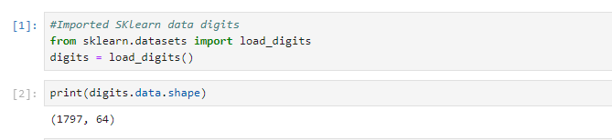
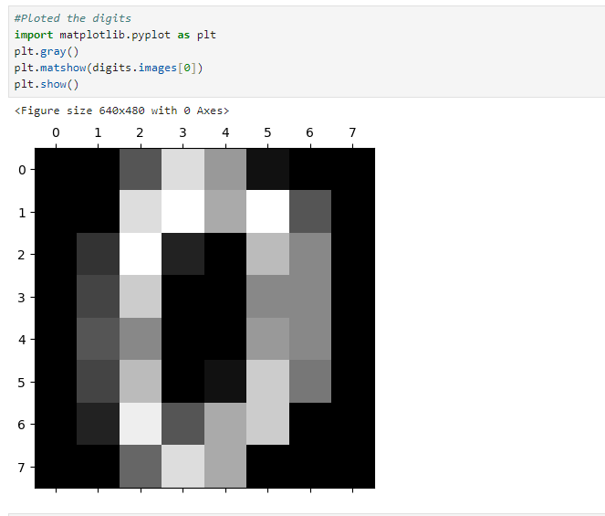
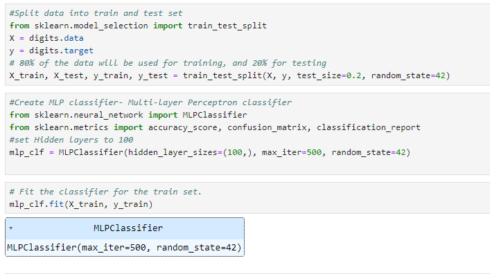
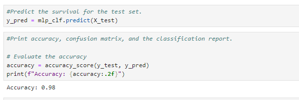
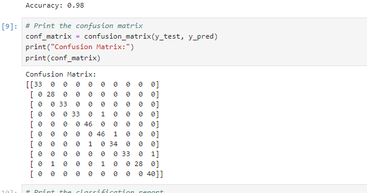
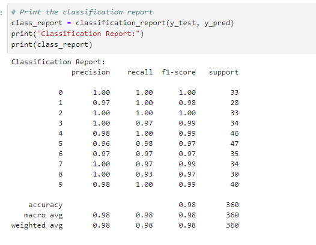
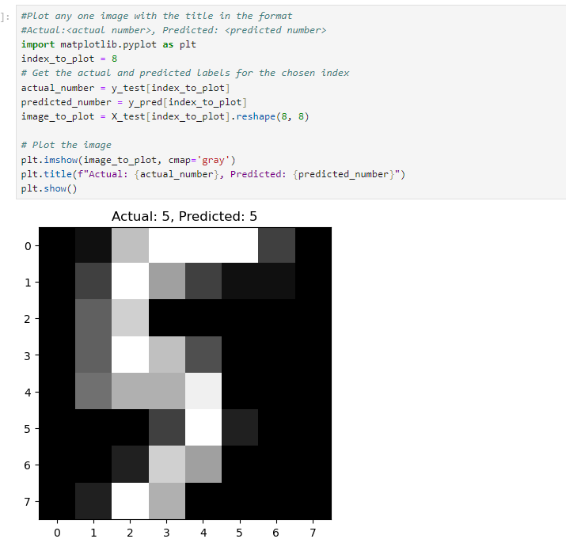

This is the process of creating and training a Multi-layer Perceptron (MLP) for a Handwritten number classifier. The MLP classifier achieves a high accuracy of 98% on the test set, and the confusion matrix and classification report provide detailed information about the model's performance for each digit class.
-
Step 1 : Loading Digits Data:
I import and the 'load_digits' function from the 'sklearn.datasets' module to load the digits dataset. The dataset consists of 8x8 pixel images of handwritten digits (0 through 9). Then I print the shape of the data, which is (1797, 64). This means there are 1797 samples, and each sample has 64 features.
Step 2 : Plotting Digits
I use matplotlib to plot the first image in the dataset, which corresponds to the digit '0'.
Step 3: Splitting Data into Train and Test Sets
I import the train_test_split function from sklearn.model_selection to split the data into training and testing sets. 80% of the data is used for training (X_train, y_train), and 20% for testing (X_test, y_test).
Step 4:Creating MLP Classifier
  The code uses the trained classifier to predict the labels for the test set. Then I check the accuracy, confusion matrix, and classification report for the predictions.
Step 7: Displaying Individual Predictions
I print the index, actual digit, and predicted digit for each sample in the test set.